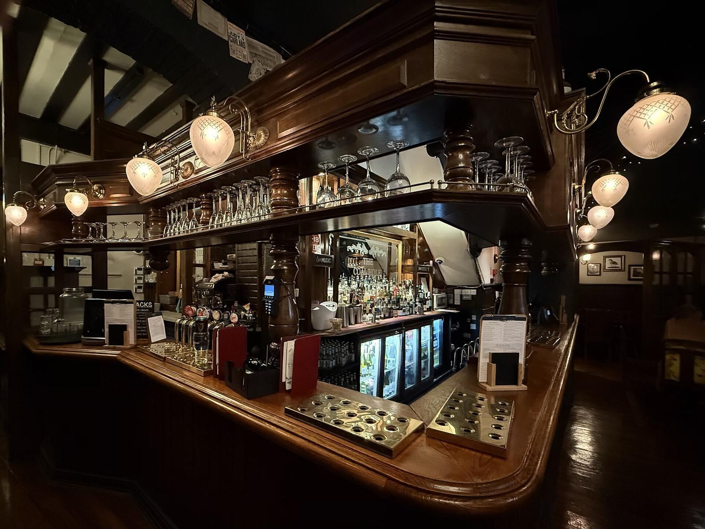
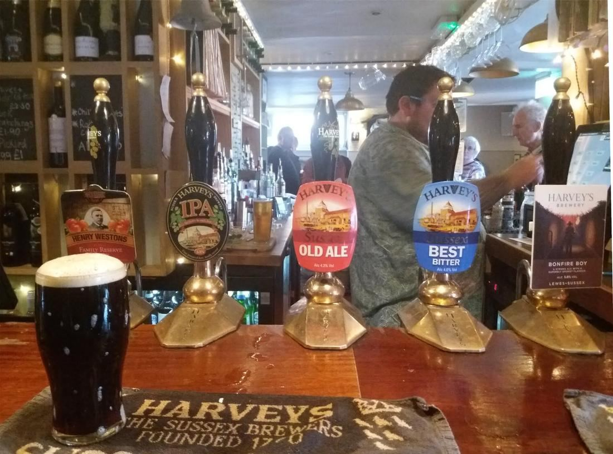

High Street · Yarm
Real ale, proper pub.
Rotating cask ales, fine wines and single malts in the heart of Yarm. Pull up a stool, have a pint and a chat.
About us
A traditional pub for a new generation
Cask & Barrel is a pub on Yarm High Street, built around a rotating line-up of real ales on six hand pulls, with wines and single malts alongside.
Come in for a quiet afternoon pint or an evening with friends.
- Six hand pullsChanging real ales, often including porter and stout.
- Wines & single maltsA carefully chosen range alongside the cask line-up.

What people say
Kind words
Opening hours
When to find us
| Monday | Closed |
|---|---|
| Tuesday | Closed |
| Wednesday | 12pm – 10pm |
| Thursday | 12pm – 10pm |
| Friday | 12pm – 10pm |
| Saturday | 12pm – 10pm |
What’s on
Events & regulars
Nothing on the calendar yet – ask at the bar what's coming up.
Private hire
Celebrate with us
Birthdays, wakes, team nights or a tasting evening – tell us what you have in mind.
We’ll be in touch about your soon.
(demo – nothing was sent)
Find us
On Yarm High Street
Winpenny House
137 High Street
Yarm TS15 9AY
At the north end of the High Street, close to bus routes.
- Email: contact@caskandbarrelyarm.uk

Map image © OpenStreetMap contributors. The interactive map loads from openstreetmap.org only when you press the button.